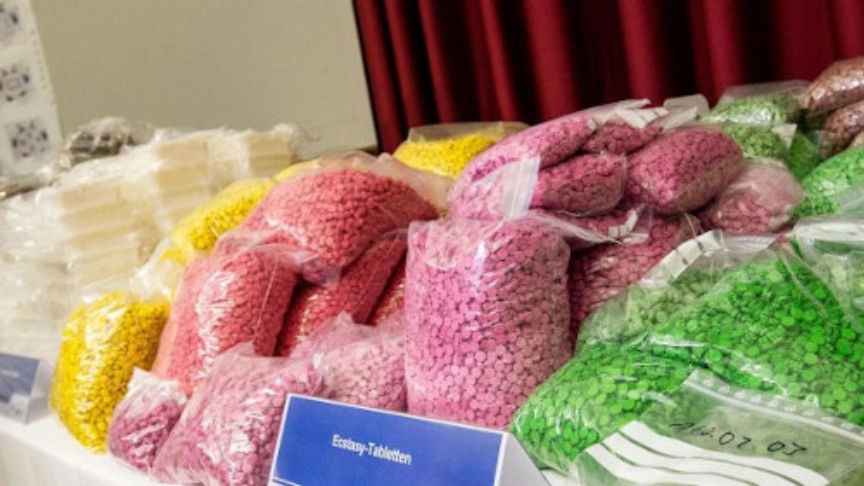
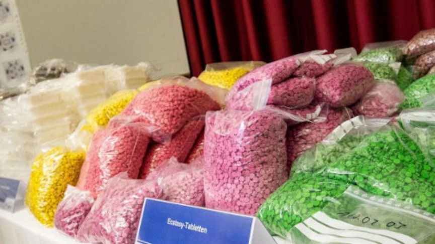

Netherlands Darkweb Vendor Sentenced to Four Years in Prison
~2 min read | Published on 2019-12-13, tagged Darkweb-Vendor, Sentenced using 477 words.
A 35-year-old man from Eindhoven, Netherlands was sentenced to 48 months in prison for drug trafficking and money laundering. The defendant a variety of drugs to users from all over the world through the darkweb from mid-2014 to early 2019.
According to court documents, the 35-year-old was arrested as a result of an investigation that was triggered by a tip from German authorities. German authorities were reportedly looking for a man based in the Netherlands who was in constant contact with a darkweb drug vendor they were investigating.
On March 6 the defendant was arrested after law enforcement found three kilograms of drugs in his car. On being arrested the defendant reportedly gave a telephone number that was similar to a number that had been used to ship drugs via an undisclosed courier company. On the same day, the cops executed a search warrant on the defendant’s house. During the search, the cops found and seized 2296 grams of amphetamine, 55 ecstasy pills, and close to 50 kilograms of hashish. They also found 646 counterfeit euro banknotes.
The defendant was charged with production and possession of counterfeit euro notes, money laundering, distribution and possession of hashish, amphetamine, and MDMA. During the trial hearing on 29 November 2019, the prosecution told the court that the defendant had been selling drugs on the darkweb from August 2014 to March 2019. The prosecution said that the defendant had used the alias “Godfather” on undisclosed darkweb marketplaces. Through accounts under that username, the defendant accepted drug orders from all over the world. They had evidence that the man had received bitcoin in exchange for his products and that he has used the postal service to deliver the drug packages to his clients. The defendant also supplied drugs to a darkweb drug vendor who used the pseudonym “Shiny Flakes.” Investigators had also uncovered that the defendant had laundered almost 200,000 euros. The prosecution then asked the judge to sentence the defendant to 5 years in prison.
In his testimony, the defendant told the court that the drugs and counterfeit money found in his house had been left by his friends whose names he refused to disclose. He also told the court that he was a bitcoin trader and that he did not know those that he traded with. The defense attorney argued that his client is a smart guy who would not leave his telephone number at crime scenes.
On December 13 the defendant appeared before the Oost-Brabant District Court for his sentencing hearing. The presiding judge acquitted the defendant of the charge of production and possession of counterfeit notes because it could not be proved that he was aware the notes were fake. The court, however, found the defendant guilty of darkweb drug trafficking and money laundering and sentenced him to 4 years in prison. ⌬
According to court documents, the 35-year-old was arrested as a result of an investigation that was triggered by a tip from German authorities. German authorities were reportedly looking for a man based in the Netherlands who was in constant contact with a darkweb drug vendor they were investigating.
On March 6 the defendant was arrested after law enforcement found three kilograms of drugs in his car. On being arrested the defendant reportedly gave a telephone number that was similar to a number that had been used to ship drugs via an undisclosed courier company. On the same day, the cops executed a search warrant on the defendant’s house. During the search, the cops found and seized 2296 grams of amphetamine, 55 ecstasy pills, and close to 50 kilograms of hashish. They also found 646 counterfeit euro banknotes.
The defendant was charged with production and possession of counterfeit euro notes, money laundering, distribution and possession of hashish, amphetamine, and MDMA. During the trial hearing on 29 November 2019, the prosecution told the court that the defendant had been selling drugs on the darkweb from August 2014 to March 2019. The prosecution said that the defendant had used the alias “Godfather” on undisclosed darkweb marketplaces. Through accounts under that username, the defendant accepted drug orders from all over the world. They had evidence that the man had received bitcoin in exchange for his products and that he has used the postal service to deliver the drug packages to his clients. The defendant also supplied drugs to a darkweb drug vendor who used the pseudonym “Shiny Flakes.” Investigators had also uncovered that the defendant had laundered almost 200,000 euros. The prosecution then asked the judge to sentence the defendant to 5 years in prison.
A Picture of the Drugs Seized During the Shiny Flakes Bust
In his testimony, the defendant told the court that the drugs and counterfeit money found in his house had been left by his friends whose names he refused to disclose. He also told the court that he was a bitcoin trader and that he did not know those that he traded with. The defense attorney argued that his client is a smart guy who would not leave his telephone number at crime scenes.
On December 13 the defendant appeared before the Oost-Brabant District Court for his sentencing hearing. The presiding judge acquitted the defendant of the charge of production and possession of counterfeit notes because it could not be proved that he was aware the notes were fake. The court, however, found the defendant guilty of darkweb drug trafficking and money laundering and sentenced him to 4 years in prison. ⌬